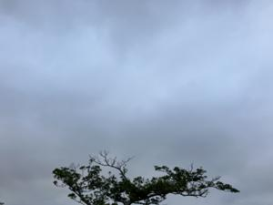
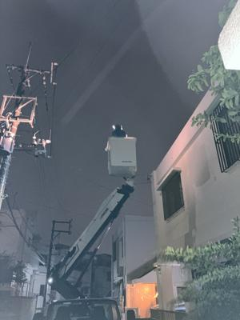

うるがいの話 ある日
最新: 電気の引き込み線が切れる【うるがいの話 ある日】とは 一日だけのプログです
『うるがいの話』の最新一日だけのプログで、通信料が少なく経済的だ。カニの画像をクリックすると全ての日付が載る『うるがいの話』サイトを表示します
|
|
【うるがいの話】 うるがい(ｳﾙｶﾞｲ urugai)とは、『もずくがに』の名前でとても大きくなります。 |
|---|---|
|
|
【カミマヤーの話】 猫のことを方言でマヤーといいます。カミマヤー（kamimayaa）とは、神の猫のことです。 |
|
【たながぁの音楽】 たながぁ（ﾀﾅｶﾞｰ tanagaa）とは手長えびのことで、何種類かあり大きいのは車 エビぐらいになります。 |

|
【ぶながぁの話】 ぶながぁ(ﾌﾞﾅｶﾞｰ bunagaa)とは、赤い髪の毛、赤い身体、そして身長は１ｍ２０ｃｍ ぐらい、川の蟹を食べているの目撃された。場所は沖縄県国頭郡大宜味村のと ある村僕の隣近所に住んでいる爺さんから、聞いた話です。 |
|
|
【ギーマの話】 ギーマ(giima)とは、山原の里山に咲くスズランに似た、 花を付けます。実は食べられます、 気が付くと口の周りが紫になっています。 |
2023年12月17日 (日）電気の引き込み線が切れる
14:19

『どうしました』、停電しているのですが、１階が電気が点かなく、２階は電
器が使えます。分電盤のブレーカーは、特に問題はないようです、何か音もし
ます。『分かりました、今日の受付は５８番です。同じような現象が、いくつ
かおきている、エーと一時間頃したら対応の要員がそちらに伺います』。電話
を終えたのが、２３時１９分普通寝ている時間である。１時間も待つのか、と
しばらくパソコンで戯れる。日付は、日曜日、００時４０分沖縄電力の作業員
のクレーン車が到着、すぐに分電盤をテスターでチェックする。確かに、一階
は電流が流れていない、外をみた作業員が引き込み線が切れている！。と引込
線を新しいのに替えますと、３０分ほど強風で小雨の中、復旧作業をする。そ
して、１時２０分に二人は引き上げ行った。『新築一戸建て３０年で一度も引
込線を替えていない所は、この付近で同じようの引込線を新しいのに替えてい
ます』と話してくれた。ホー、耐用年数は３０年程度か、保守点検で停電する
前に変えないのかな、と。

夜、１０時過ぎドンと何かが落ちる音がした。ヨメがテレビが映らない！と騒
ぐ、屋上に設定しているアンテナ装置が強風で落ちたかも。一階へ降りていく
と真っ暗闇。２階は電気ついているのに？と、分電盤をチェックする。ブレー
カーは、落ちていない。ん、電気がつかないのは１階だけ？、ナゾである。２
階は、電気が使えるのでパソコンから、対応方法を調べる。さて、何処へ連絡
するか？、沖縄電力か、または電気保安協会、連絡方法は、ネットでは休日は
対応してない、フムフム、月曜日か？。２階は使えるので・・・、待てと緊急
事態の時の連絡がある筈と、『休日停電した時の連絡』で検索すると
停電・緊急のお問い合わせ（24時間受付） 0120-586-701 沖縄電力那覇
パソコンが使えてなんと運がいいのだろう、つくづく運がいい（固定電話など
の通信機器は一階だが、唯一電気が利用できていた）。ただ、晴れて暑かった
金曜日、床屋へいった、そこでテレビを見ていたが突然、信号が受信出来ませ
んとテレビが見れなくなった。エ、壊れたのは私が居たからとフと頭の中・・
店主は直ぐに、馴染みの電気屋さんに電話をかけ、直ぐに直しにきて！と言う
ホウー、私の壊れた液晶テレビ、先週エディオンに預けたのが、来年１月１６
日に修理完了予定ですヨ。店主は、うちは営業用なので電化製品は、融通が利
かない家電量販店は一切利用していません。と答えた。確かにそうだよねとあ
いづちを打つ。寒い日の今日、湯沸かし器が使えるのと使えないのでは。
１４時１０分 ビットコインの総資産 ￥１７、３４５（↓１０５）